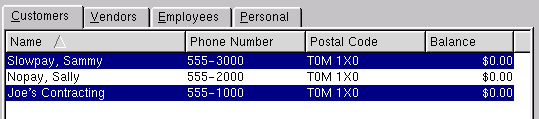
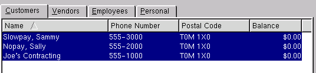
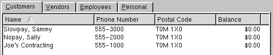

| Table of Contents | Quasar Commands | Up: Card File | Previous: Send Email | Next: Todo List |
The mailing list has four display folders. The default is "Customer" in which you can print customer mailing labels. Click on "Vendor" to print vendor mailing labels. Click on "Employee" to print employee mailing labels. Click on "Personal" to print mailing labels from the personal cards.
You can sort the mailing label list by clicking on the column header and selecting ascending or descending order.
There are several ways in which you can select the mailing labels that you wish to print.
The range of labels that you selected will be high-lighted.

To select a group of random labels, hold down the ctrl key while using
the left button of your mouse to click on each label the you wish to
print. The labels you have selected will be high-lighted.

Click on "All" to select all labels in the folder.

Click on "None" to remove all mailing labels from the selection.

Select a predefined label type. Print one of each type to view. Note that the page type and paper size selected when printing must correspond with the label type.
Enter the number of each mailing label that you wish to print.
Enter the row number on which the first label will be printed. For example, if you have already printed labels in all columns in row one and row two then you will begin printing your first label in row three. This attribute works in conjunction with the start column attribute and is a feature to ensure that you do not waste expensive labels.
Enter the column number on which the first label will be printed. For example, if you have already printed labels in the first column then you will begin printing your first label in column two. This attribute works in conjunction with the start row attribute and is a feature to ensure that you do not waste expensive labels.
| Table of Contents | Quasar Commands | Up: Card File | Previous: Send Email | Next: Todo List |